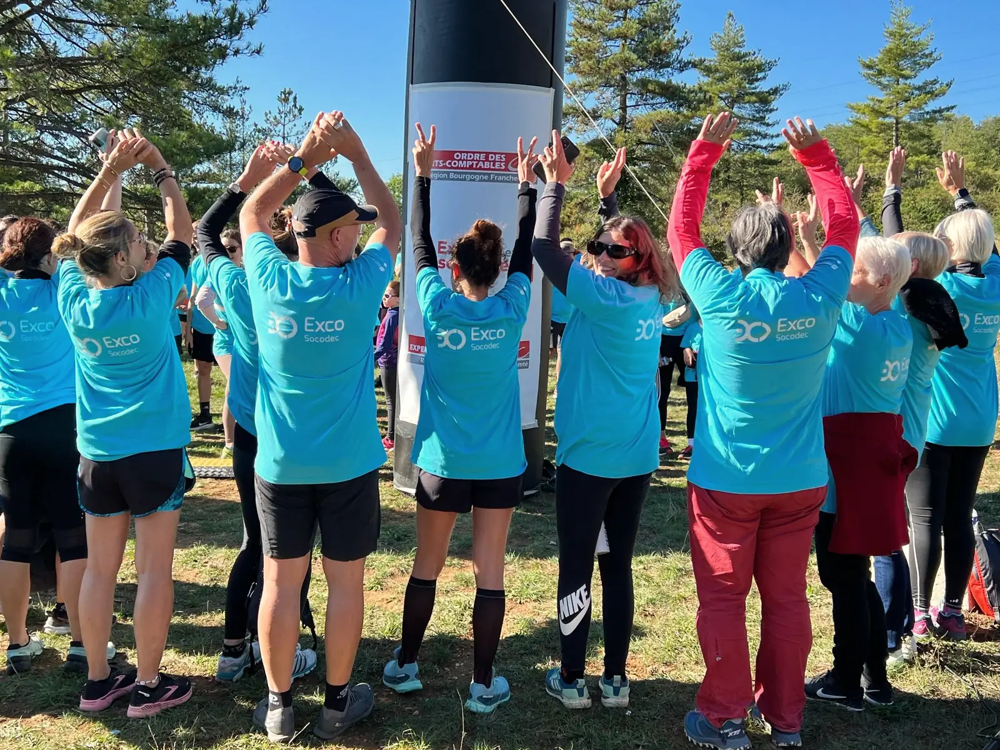
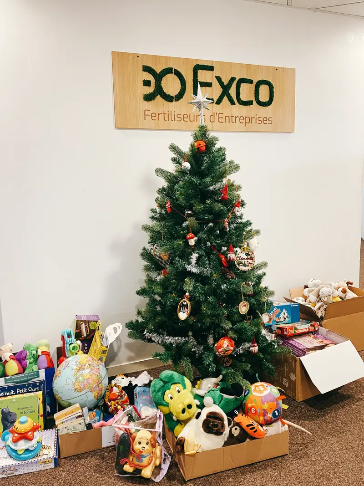

Nos engagements RSEOur CSR commitments
Au sein du réseau Exco, nous nous engageons à intégrer les principes de la Responsabilité Sociale des Entreprises (RSE) dans toutes nos activités. Conscients de notre impact sur la société et l’environnement, nous aspirons à contribuer positivement à la construction d’un monde plus durable et équitable.Within the Exco network, we are committed to integrating the principles of Corporate Social Responsibility (CSR) into all our activities. Aware of our impact on society and the environment, we aim to make a positive contribution to building a more sustainable and equitable world.

Principes fondamentauxCore principles
Télécharger nos engagements RSE (exco.fr)Download our CSR commitments (exco.fr)Respect des Droits de l’HommeRespect for human rights Nous respectons pleinement les droits de l’Homme tels que définis par les normes internationales.We fully respect human rights as defined by international standards.
Protection de l’EnvironnementEnvironmental protection Nous œuvrons à minimiser notre empreinte environnementale en préservant les ressources naturelles et en adoptant des pratiques respectueuses de l’environnement.We strive to minimize our environmental footprint by conserving natural resources and adopting environmentally-friendly practices.
Engagement SocialSocial commitment Nous nous efforçons d’améliorer la qualité de vie au travail de nos collaborateurs et de contribuer au développement durable de nos communautés.We strive to improve the quality of working life for our employees and contribute to the sustainable development of our communities.
Engagement ÉconomiqueEconomic commitment Nous soutenons le développement économique des régions où nous opérons tout en respectant les principes de la RSE.We support the economic development of the regions in which we operate, while respecting the principles of CSR.
Transparence et IntégritéTransparency and integrity Nous nous engageons à agir de manière transparente, éthique et responsable dans toutes nos actions.We are committed to acting transparently, ethically and responsibly in all our actions.
Quatre axes d’actionFour areas of action
Exco s’engage depuis plusieurs années dans des actions mises en place au niveau national et local.For several years now, Exco has been involved in a number of national and local initiatives.
EnvironnementEnvironment
Nous réduisons notre consommation d’énergie, minimisons nos déchets, privilégions des fournisseurs responsables, promouvons une utilisation responsable du numérique et encourageons la mobilité durable.We reduce our energy consumption, minimize waste, favor responsible suppliers, promote responsible use of digital technology and encourage sustainable mobility.
Social
Nous favorisons la diversité et l’inclusion, assurons la sécurité et la santé de nos collaborateurs, et leur offrons des opportunités de développement professionnel et personnel.We promote diversity and inclusion, ensure the health and safety of our employees, and offer them opportunities for professional and personal development.
EconomiqueEconomical
Nous soutenons l’emploi local, participons à des initiatives de développement économique, contribuons à des causes sociales et environnementales, et aidons nos clients à effectuer une transition vers une économie plus durable.We support local employment, participate in economic development initiatives, contribute to social and environmental causes, and help our customers make the transition to a more sustainable economy.
Éthique et TransparenceEthics and Transparency
Nous respectons les lois, normes éthiques et déontologiques, favorisons une communication ouverte avec nos parties prenantes et publions régulièrement des rapports sur notre engagement RSE.We comply with laws and ethical standards, promote open communication with our stakeholders and publish regular reports on our CSR commitment.
Nos engagements RSE, au plus près de nos territoiresOur CSR commitments, close to our communities
Environnement, social, économie locale, éthique et transparence : des actions menées au niveau national et dans chaque cabinet.Environment, people, local economy, ethics and transparency: actions led nationally and in every office.
Environnement et solidaritéEnvironment and solidarity
Mois Exco ResponsableExco Responsible Month
Chaque année, un mois de sensibilisation pour tout le réseau : un défi environnemental pour réduire l’empreinte carbone et une action de solidarité.Every year, a month-long awareness event across the network: an environmental challenge to cut our carbon footprint and a solidarity drive.
EnvironnementEnvironment
Convention des entreprises pour le climatBusiness Climate Convention
Exco a suivi le parcours « Monde financier » de la session 2023-2024 pour co-construire un modèle économique respectueux du vivant.Exco took part in the 2023-2024 "Financial world" programme to help design an economic model that respects living systems.
Santé au travailHealth at work
Exco United
Depuis plus de sept ans, un challenge de marche connectée contre la sédentarité.For over seven years, a connected walking challenge to fight a sedentary lifestyle.
SolidaritéSolidarity
Exco a du cœurExco has heart
Chaque mois de décembre, des collectes solidaires pour les Restos du Cœur, le Secours Populaire, les banques alimentaires et d’autres associations.Every December, collections for food banks and charities such as Restos du Cœur and Secours Populaire.
InclusionInclusion
Inclusion et égalitéInclusion and equality
Participation au Duo Day, publication de l’index d’égalité femmes-hommes, parcours d’intégration et de parrainage des nouveaux arrivants.Duo Day participation, published gender equality index, onboarding and mentoring for newcomers.

Lire la charte RSE (PDF)Read the CSR charter (PDF, in French)
Nos actions en détailOur actions in detail
EnvironnementEnvironment
Mois Exco Responsable
Chaque année, Exco organise un événement d’un mois pour sensibiliser sur les enjeux sociaux & environnementaux pour ses 140 cabinets et 3000 collaborateurs français et internationaux. L’événement réunit les collaborateurs du réseau autour d’un challenge environnemental pour réduire l’empreinte carbone et une action de solidarité.
Ainsi, depuis sa création, les collaborateurs ont été sensibilisés à la sobriété énergétique, le numérique responsable, la mobilité douce…mais aussi à créer de la solidarité en soutenant des associations locales (collectes pour les Restos du Cœur, le Samu Social, le Secours Populaire, collecte de jouets pour les enfants, collecte de bouchons….
Nous avons également réalisé des Fresques (Fresque du numérique, Fresque de l’entreprise régénérative).
Bilan Carbone
Plusieurs cabinets du réseau Exco ont entrepris la réalisation d’un bilan carbone afin de mesurer leur impact environnemental et mettre en place des plans d’actions visant à réduire les émissions de gaz à effet de serre.
Participation à la Convention des Entreprises pour le Climat
Exco a participé au parcours de la Convention des entreprises pour le climat » Monde Financier » (Session 2023/2024) dont la mission est de mobiliser des dirigeants d’organisations de tous secteurs et de toute taille pour agir rapidement et concrètement face à l’urgence écologique (climat, biodiversité, ressources, pollution …).
L’ambition est de co-construire un nouveau modèle économique respectueux du vivant et le mettre en œuvre à travers des feuilles de route opérationnelles et des projets concrets pour transformer durablement le territoire en réconciliant écologie, économie et social.
Month Exco Responsible
Every year, Exco organizes a month-long event to raise awareness of social and environmental issues for its 140 firms and 3,000 French and international employees. The event brings together the network’s employees around an environmental challenge for reduce their carbon footprint and a solidarity.
Since its creation, employees have been made aware of the importance of energy efficiency digital responsible but also to create solidarity by supporting local associations (collections for Restos du Cœur, Samu Social, Secours Populaire, toy collection for children, cork collection....
We have also created Frescoes (Fresque du numérique, Fresque de l’entreprise régénérative).
Carbon footprint
Several firms in the Exco network have undertaken to carry out a to measure their environmental impact and implement and implement action plans to reduce greenhouse gas emissions.
Participation in the Business for Climate Convention
Exco took part in the Convention des entreprises pour le climat "Financial World" (Session 2023/2024), whose mission is to mobilize leaders of organizations in all sectors and of all sizes to act quickly and concretely in the face of the ecological emergency (climate, biodiversity, resources, pollution...).
The ambition is to co-construct a new economic model that respects the living world and implement it through operational roadmaps and concrete projects to sustainably transform the region by reconciling ecology, economy and society.
SocialPeople
Bien-être & QVT
Nous renforçons la cohésion d’équipe au sein des cabinets Exco en favorisant les échanges informels et les moments de partage entre les salariés et les services. Pour améliorer la qualité de vie au travail, nous organisons des événements de convivialité et offrons des moments de détente et de bien-être. Nous développons et renforçons le sentiment d’appartenance en offrant un environnement de travail agréable et en rendant nos métiers plus attractifs. Enfin, nous avons mis en place un programme pour intégrer et fidéliser les talents, en favorisant une culture d’entreprise positive.
Challenge Sportif de Marche Connectée
Nous organisons depuis plus de 7 ans, un challenge sportifs de marche connectée « Exco United » pour lutter contre la sédentarité et favoriser le bien-être de nos collaborateurs, en encourageant une activité physique régulière.
Index égalité Femmes-Hommes
Nos cabinets publient leur index égalité femmes-hommes et œuvrent pour faire progresser au sein du réseau l’égalité salariale entre les femmes et les hommes.
On boarding parcours d’intégration
Le réseau a mis en place un système d’intégration et de parrainage pour les nouveaux arrivants afin de faciliter leur prise de poste. Une « School » d’intégration une fois par an permet de réunir à Paris, les collaborateurs du réseau. La « School » représente une occasion unique de rencontres et d’échanges à l’issue de la fin de la période d’intégration. Elle s’inscrit dans notre culture collective de partage et de convivialité. Notre objectif : développer les échanges, fédérer les énergies, partager la stratégie et la vision du réseau.
Duo Day pour l’Inclusion et le Handicap
Notre participation au Duo Day découle de notre engagement envers l’inclusion. C’est une occasion unique de mettre en pratique nos valeurs et de contribuer à changer notre regard sur le handicap. Cette journée est riche en découvertes, en partage de connaissances, et en moments forts.
Emploi et recrutement
Engagement en faveur de l’emploi dans nos territoires d’implantation :
dans le Grand-Est avec FACE/Ilia, 60 000 Rebonds à Clermont-Ferrand, Territoires Zéro Chômage.
Les Entreprises s’engagent
Nous sommes membres des Entreprises s’engagent, un réseau d’entreprises mobilisées pour l’emploi et l’insertion professionnelle des personnes en difficulté. Exco a participé en 2023 aux cercles de réflexion des Entreprises s’engagent.
Participation aux Journées de la Prévention Routière
Nous participons activement aux journées de la prévention routière, sensibilisant nos collaborateurs aux bonnes pratiques et en contribuant à la sécurité de tous sur les routes.
Well-being & QWL
We strengthen team cohesion at Exco by encouraging informal exchanges and moments of sharing between employees and departments. For improve the quality of life at work At Exco, we organize convivial events and offer moments of relaxation and well-being. We develop and reinforce a sense of belonging by offering a pleasant working environment and making our professions more attractive. Finally, we have put in place a program to integrate and retain talent, by fostering a positive corporate culture.
Challenge Sportif de Marche Connectée
For over 7 years, we have been organizing the "Exco United" connected walking sports challenge to combat sedentary lifestyles and promote the well-being of our employees, by encouraging regular physical activity.
Gender Equality Index
Our firms publish their gender equality index and work to promote equal pay for men and women within the network. in the network.
On boarding integration course
The network has set up an integration and mentoring system for new arrivals, to make it easier for them to take up their new positions. An integration school is held once a year in Paris, bringing together the network’s employees. The School is a unique opportunity to meet and exchange ideas at the end of the integration period. It’s part of our collective culture of sharing and conviviality. Our aim: to develop exchanges, unite energies and share the network’s strategy and vision.
Duo Day for Inclusion and Disability
Our participation in Duo Day stems from our commitment to inclusion. It’s a unique opportunity to put our values into practice and help change the way we look at disability. It’s a day rich in discovery, knowledge-sharing and highlights.
Employment and recruitment
Commitment to employment in our host regions:
in the Grand-Est region with FACE/Ilia, 60,000 Rebonds in Clermont-Ferrand, Territoires Zéro Chômage.
Corporate Commitment
We are a member of Entreprises s’engagent a network of companies committed to the employment and professional integration of people in difficulty. In 2023, Exco took part in the "Entreprises s’engagent" think tanks. Entreprises s’engagent.
Participation in the Journées de la Prévention Routière (Road Safety Days)
We take an active part in road safety days, raising our employees' awareness of best practices and contributing to the safety of everyone on the roads. safety on the roads.
SolidaritéSolidarity
Les cabinets du réseau Exco ont à cœur de jouer un rôle économique et social positif dans leurs territoires d’implantation. Ils mènent une politique de mécénat pour œuvrer au plus près des préoccupations.
Depuis plus de 7 ans, le réseau organise une action de solidarité « Exco a du cœur » au mois de décembre et organise des collectes solidaires pour des associations :
- Restos du Cœur
- Secours Populaire
- Epicerie Solidaire
- France Cancer
- Samu Social
- Boite Solidaire
- Banque Alimentaire
The firms in the Exco network are committed to playing a positive economic and social role in the areas where they operate. They pursue a policy of corporate philanthropy to ensure that they are as close as possible to the people who care about them.
For more than 7 years, the network has organized the " Exco a du cœur" solidarity campaign in December and fund-raised for a number of associations:
- Restos du Cœur
- Secours Populaire
- Epicerie Solidaire
- France Cancer
- Samu Social
- Boite Solidaire
- Banque Alimentaire
Gouvernance de la démarcheGovernance of the approach
Le Comité Directeur
La stratégie du réseau est définie par un Comité Directeur composé d’Associés, représentant chaque cabinet membre du réseau.
Le principe partagé est « d’un homme, une voix » au sein du Comité Directeur, organe de décision du Réseau.
Un Bureau Exécutif, composé de six membres élus, est chargé de mettre en œuvre la stratégie du réseau.
Ces deux structures sont présidées par un Associé du réseau, élu par le Comité Directeur. Monsieur Bruno Geeraert est le Président en fonction et il est assisté du Directeur Général, Monsieur Franck Parker ainsi que d’une équipe de permanents couvrant les domaines suivants pour l’ensemble des cabinets membres :
- Secrétariat
- Administration et formation,
- Communication et marketing,
- Nouvelles technologies de l’information et des communications
La commission Exco RSE
La Commission est un lieu de réflexion, de partage et de formations sur les sujets de la RSE. L’ambition est de créer un laboratoire d’idées et d’innovation.
Elle accompagne de manière opérationnelle les cabinets du réseau et se place dans un process d’amélioration continue.
- Initier et élaborer la démarche RSE au sein du réseau
- Se former aux enjeux de la RSE
- Identifier, définir les enjeux prioritaires et les actions à mener
- Proposer et livrer des outils de suivi, pilotage et tableaux de bord RSE pour le réseau
- Marque/visibilité/attractivité : publication d’un rapport annuel consolidé. La commission collectera les données RSE des cabinets avec l’ambition de produire un rapport annuel consolidé pour l’ensemble du réseau.
The Board of Directors
Network strategy is defined by a Steering Committee made up of partners representing each member firm.
The shared principle is "one man, one vote on the Board of Directors, the network’s decision-making body.
An Executive Board made up of six elected members, is responsible for implementing the network’s strategy.
Both structures are chaired by a network partner, elected by the Board of Directors. Bruno Geeraert is the current Chairman, assisted by Managing Director Franck Parker and a team of permanent staff covering the following areas for all member firms:
- Secretariat
- Administration and training,
- Communication and marketing,
- New information and communications technologies
The Exco CSR Commission
The Commission is a forum for reflection sharing and training on CSR issues. The ambition is to create a laboratory of ideas and innovation.
It provides operational support for the network’s practices, and is part of a continuous improvement process.
- Initiate and develop the CSR approach within the network
- Training in CSR issues
- Identify and define priority issues and actions to be taken
- Propose and deliver CSR monitoring, steering and dashboard tools for the network
- Brand/visibility/attractiveness: publication of a consolidated annual report. The commission will collect CSR data from firms, with the aim of producing a consolidated annual report for the entire network.
Un projet, une question ?A project or a question?
Trouvez le cabinet Exco le plus proche ou demandez un rendez-vous : un expert vous rappelle.Find your nearest Exco office or request a meeting: an expert will call you back.